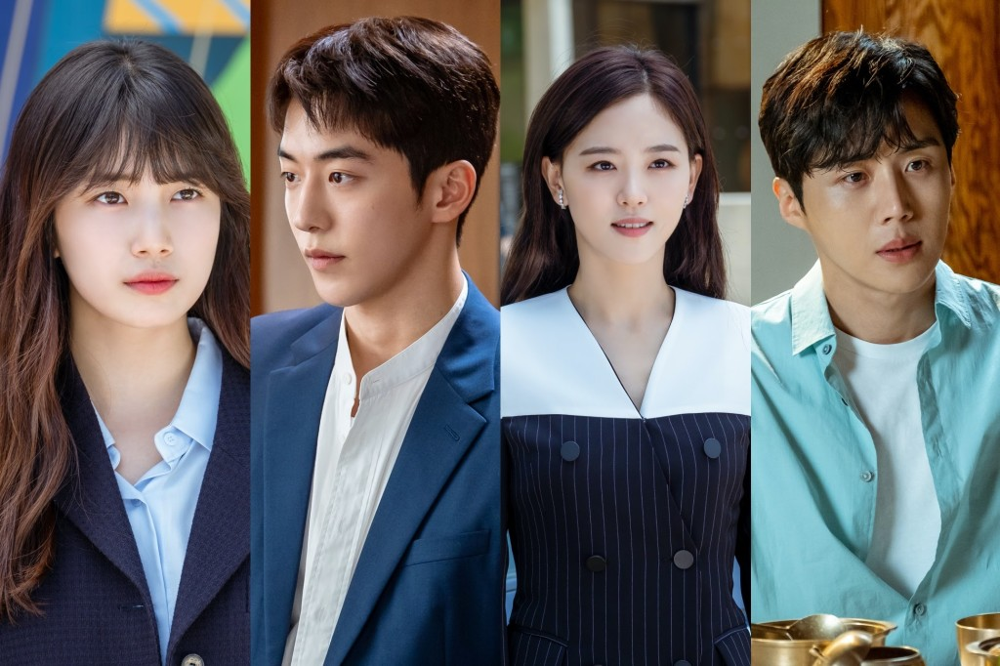
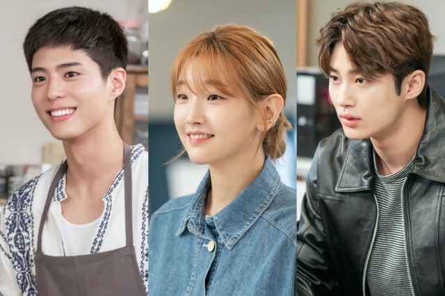
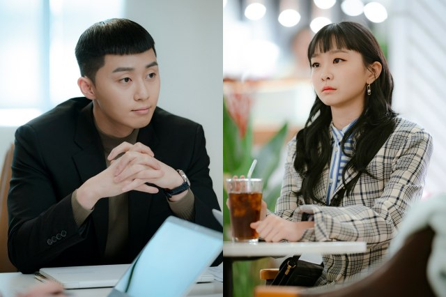
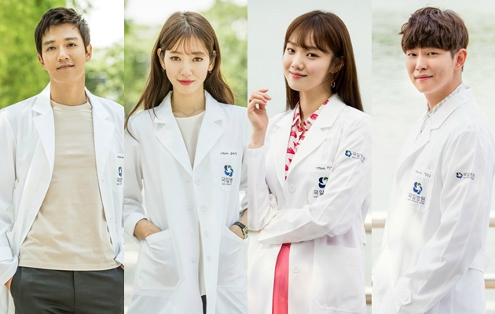
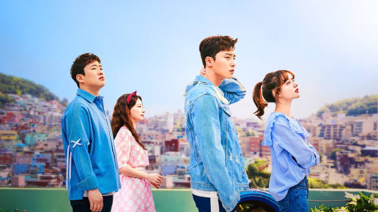

Rekomendasi Drama Korea Inspiratif yang Bikin Semangat Mengejar Mimpi
Konten ini diproduksi oleh kumparan K-Pop
7 November 2020 14:51
Ada sederet drama Korea yang punya kisah inspiratif dan bisa membuat kamu bersemangat dalam mengejar mimpi. Ceritanya yang menarik juga dapat memberikan motivasi untuk tidak mudah menyerah.
Apa saja drama tersebut? Simak selengkapnya di bawah ini, yuk!
START UP

Start-Up bercerita mengenai empat anak muda yang tertarik dengan dunia start-up dan teknologi. Kisahnya berpusat di Seo Dal Mi (Bae Suzy) dan Won In Jae (Kang Han Na) yang merupakan dua bersaudara.
Mereka terpisah saat kecil akibat perceraian orang tua dan bertemu kembali sebagai saingan ketika dewasa.
Ada juga Nam Do San (Nam Joo Hyuk) adalah seorang ahli matematika dengan bisnis yang belum berjalan lancar, dan yatim piatu Han Ji Pyeong (Kim Seon Ho) yang dapat mengubah hidupnya lewat bantuan dari nenek Dal Mi.
Keempatnya terus belajar dan berkembang seiring dengan perjuangan mereka mengejar mimpi di bidang teknologi.
Record of Youth

Record of Youth juga mengangkat cerita mengenai anak-anak muda yang mengejar mimpi, namun di dunia hiburan. Sa Hye Jun (Park Bo Gum) dan Won Hae Hyo (Byeon Woo Seok) adalah model yang ingin merambah ke dunia akting, sedangkan An Jeong Ha (Park So Dam)
memutuskan berhenti dari pekerjaannya demi mengejar cita-cita menjadi seorang make-up artist.
Meski banyak peristiwa yang menghalangi perjuangan mereka dalam mengejar mimpi, ketiganya tidak pernah putus asa dan menyerah.
Itaewon Class

Itaewon Class menampilkan perseteruan antara Park Saeroyi (Park Seo Jun) dan konglomerat di industri makanan, Jangga Group.
Saeroyi harus dikeluarkan dari sekolah, kehilangan ayahnya, dan menjadi narapidana karena ulah CEO Jangga Group dan putranya. Meski banyak ketidakadilan yang diterima,
Saeroyi mampu meredam amarah dan menyalurkannya lewat sebuah restoran yang ia bangun sendiri.
Jo Yi Seo (Kim Da Mi), sosok wanita yang dingin namun cerdas, memutuskan untuk ikut mengembangkan bisnis Saeroyi. Bersama dengan kru DanBam lainnya, pasangan ini bersatu untuk melawan Jangga Group.
DOCTORS

Serial Doctors membuktikan bahwa siapa saja dapat mengubah jalan hidup lewat kerja keras dan tekad yang kuat. Ceritanya tentang Yoo Hye Jeong (Park Shin Hye) yang tumbuh menjadi seorang anak keras kepala dan nakal di sekolahnya.
Karena perilakunya yang tak dapat diatur dan kondisi keuangannya yang buruk, masa depan Hye Jeong tidak terlihat menjanjikan. Namun setelah bertemu dengan Hong Ji Hong (Kim Rae Won),
sosok guru penyayang yang menginspirasi, ia berhasil mengubah jalan hidupnya dan menjadi seorang dokter.
Setelah 13 tahun berlalu, mereka akhirnya bertemu kembali ketika Hye Jeong menjadi seorang ahli bedah saraf.
Fight for My Way

Fight for My Way mengisahkan empat orang teman yang hidupnya tak berjalan seperti yang telah direncanakan sebelumnya. Ko Dong Man (Park Seo Jun), Choi Ae Ra (Kim Ji Won), dan Baek Sul Hee (Song Ha Yoon) tidak merasa puas dengan pekerjaan mereka saat ini.
Ae Ra yang belum menyerah kemudian mencari peluang baru untuk mencapai mimpinya. Hal ini menginspirasi Dong Man untuk kembali mengejar impian yang dapat membuatnya bahagia.
Dengan menghadapi berbagai orang dan keadaan yang sulit, keempatnya berhasil mengembangkan diri dan berjuang dalam meraih cita-cita serta mengubah hidup.
The Producers
The Producers menceritakan mengenai empat orang yang bekerja di balik layar dunia penyiaran. Baek Seung Chan (Kim Soo Hyun) menjadi seorang produser agar dapat bekerja dengan wanita yang disukainya, namun ia malah berakhir di acara radio milik Ra Joon Mo (Cha Tae Hyun).
Sementara itu, ada Cindy (IU) yang merupakan seorang penyanyi terkenal dan telah memulai kariernya di usia muda. Berbagai karakter di serial yang tayang di Netflix ini terus bekerja dengan gigih dan penuh semangat untuk mewujudkan impian mereka.